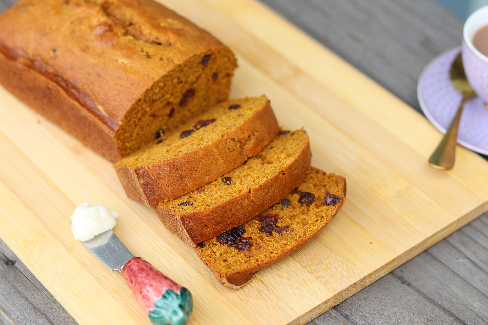

Home
Pumpkin Bread

Description
This pumpkin bread is a great old Maine recipe, moist and full of warm spices. The bread actually tastes even better the day after it is baked. It’s easy to make with canned pumpkin and perfect for holiday gift-giving!
Ingredients
- 1 (15-ounce) can pumpkin puree
- 4 large eggs
- 1 cup vegetable oil
- 2/3 cup water
- 3 cups white sugar
- 3 1/2 cups all-purpose flour
- 2 teaspoons baking soda
- 1 1/2 teaspoons salt
- 1 teaspoon ground cinnamon
- 1 teaspoon ground nutmeg
- 1/2 teaspoon ground cloves
- 1/4 teaspoon ground ginger
Steps
- Preheat the oven to 350°F (175°C). Grease and flour two 9×5-inch loaf pans.
- Whisk together the flour, baking soda, salt, cinnamon, nutmeg, cloves, and ginger.
- In another bowl, whisk the pumpkin purée, eggs, oil, water, and sugar until smooth and combined.
- Stir the dry mixture into the pumpkin mixture just until no dry streaks remain. Don’t overmix.
- Divide the batter evenly between the prepared loaf pans.
- Bake for about 50 minutes, until a toothpick inserted in the center comes out clean or with a few moist crumbs.
- Let the loaves cool in their pans for 10 minutes, then loosen the edges and transfer them to a wire rack to cool completely.
```